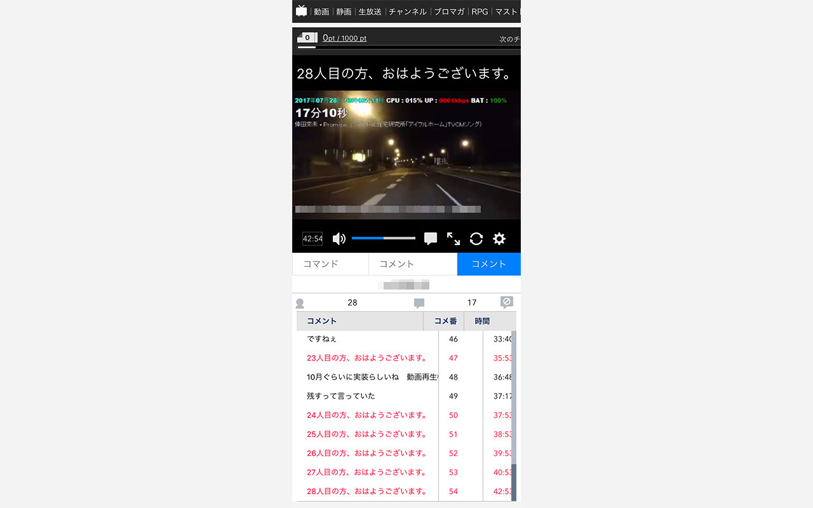

Chrome拡張 ニコニコ・ブラウザ縮小対応
ニコニコでブラウザを縮小して視聴したかった自分のために作りました。
新配信・HTML5プレイヤー版による視聴のみ対応。

使い方
Chrome右上のアイコンをクリックして、機能のチェックボックスをONにしてください。
注意事項
- 十分な検証を行っておりません。
- アンケート機能等、画面に重なるものの見え方についても全く確認しておりません。
- 旧配信の放送およびFlashプレイヤーでの視聴には対応しておりません。
- ニコニコのアップデートによって正しく動作しなくなる恐れがあります。